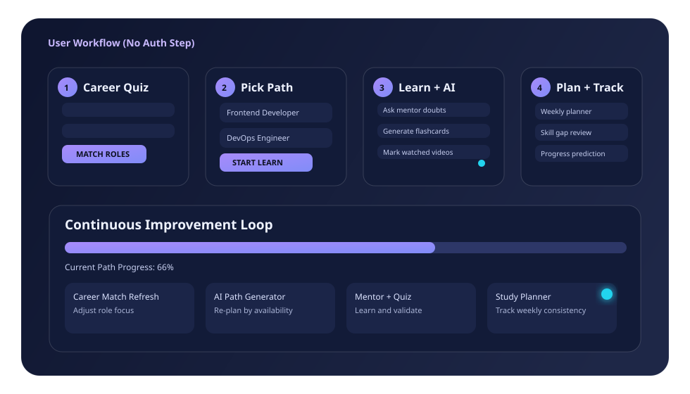

Step 1
Career Quiz
Start with interest signals to identify your best-fit role tracks.
Open Career QuizCareer Acceleration Platform
Each domain includes best tutorial resources in a complete learning flow so you can finish end-to-end preparation confidently.
Complete domain study path. Best curated tutorials. One place.

Best Workflow
Step 1
Start with interest signals to identify your best-fit role tracks.
Open Career QuizStep 2
Use dashboard filters and pick one focused path as your main track.
Open DashboardStep 3
Watch topics, ask AI mentor doubts, and generate flashcards/quiz per video.
Open LearnStep 4
Use AI path + skill gap + weekly planner to track progress and close gaps.
Open AI Path